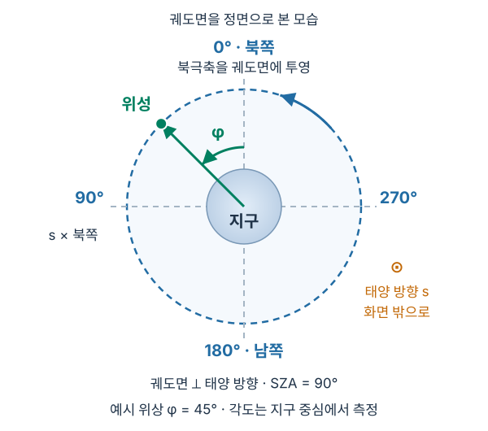
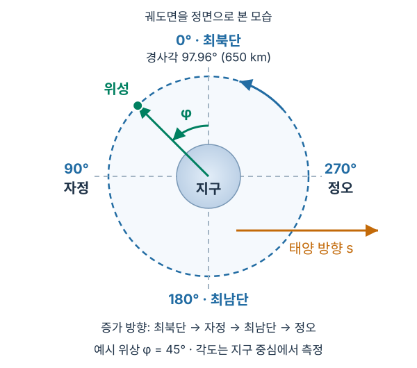
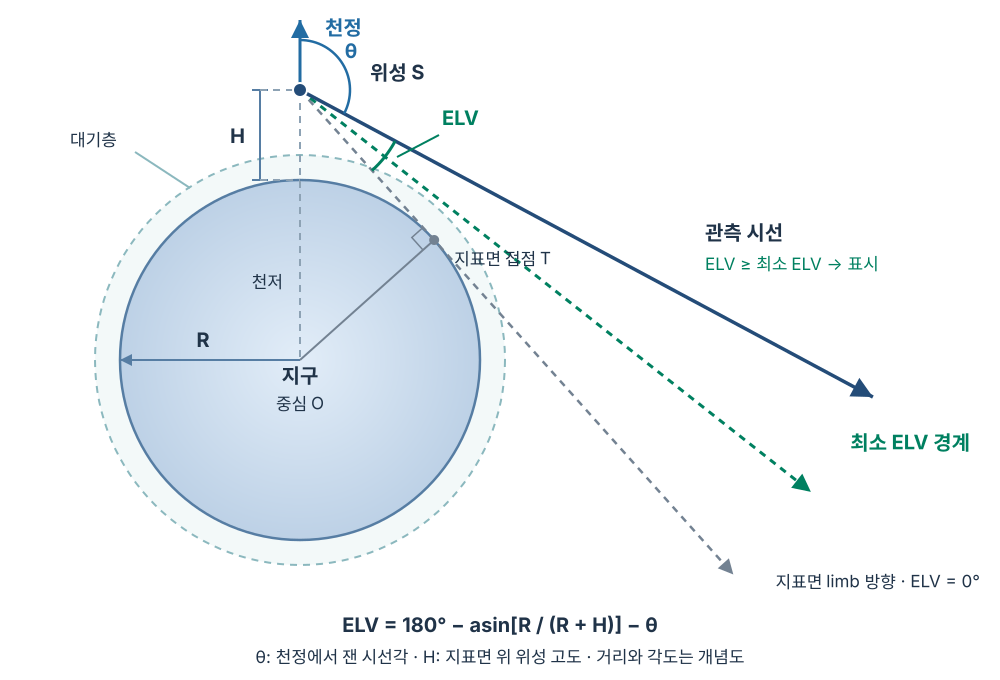

모델
표시할 배경광 성분을 선택합니다. 기본값은 Zodiacal light + DGL + Airglow이며, 세 성분의 intensity를 더한 뒤 AB 등급으로 변환합니다.
S-DRIFT / SKY BACKGROUND
Zodiacal light, DGL, airglow의 Equatorial / Galactic HEALPix map · constant throughput
데이터 준비 중…
— mag at (RA, DEC) = (—, —)
날짜와 관측 조건을 바꾸면 지도를 다시 계산합니다. 아래에서 각 설정의 의미를 확인할 수 있습니다.
표시할 배경광 성분을 선택합니다. 기본값은 Zodiacal light + DGL + Airglow이며, 세 성분의 intensity를 더한 뒤 AB 등급으로 변환합니다.
UV1: 200–400 nm, UV2: 250–400 nm, UV3: 300–400 nm, VIS: 400–700 nm입니다. 모든 밴드는 파장 구간 안에서 일정한 throughput을 가정합니다.
Equatorial은 적도 좌표 RA, DEC, Galactic은 은하 좌표 l, b로 표시합니다. 지도와 태양·달·천정 및 회피 경계를 함께 변환하며 FITS도 선택한 좌표계로 저장합니다. 기본값은 Equatorial입니다.
HEALPix 지도의 해상도입니다. 값이 클수록 픽셀이 작아지고 계산량이 늘어납니다. 기본값 128은 196,608개 픽셀에 해당합니다.
관측 날짜와 시각을 UTC로 입력합니다. 한국 시각보다 9시간 느립니다. 화살표로 날짜·시간을 조정하고, 현재 시간 버튼으로 지금의 UTC를 불러옵니다.
태양에서 설정한 각도 이상 떨어진 방향만 표시합니다. 기본값은 90°입니다. 태양은 빨간 별, 회피 경계는 빨간 점선으로 표시합니다. 체크를 해제하면 태양 회피를 적용하지 않습니다.
달에서 설정한 각도 이상 떨어진 방향만 표시합니다. 기본값은 60°입니다. 달은 노란 원, 회피 경계는 주황 점선입니다. 달 방향은 위성에서 본 방향(시차 포함, 저궤도에서 최대 약 1.1°)이며 산란 달빛은 포함하지 않습니다.
DGL: C2022 α × β · α ≈ α′ (얇은 표본 근사) · UV correlation은 372.5 nm 값으로 일정하게 연장합니다. DGL 분포는 RA, DEC에 고정되어 있으며, 날짜는 zodiacal light의 연간 변화, 태양·달 위치와 궤도 위상에 적용되며, 모든 모드에서 같은 궤도·ELV 회피 조건을 사용합니다.
J2 영년 섭동만 넣은 원형 태양동기궤도입니다. 경사각은 태양동기 조건에서 정하며 650 km에서 97.96°입니다. 승교점 지방평균태양시(LTAN)는 Dawn–dusk 18시, Noon–midnight 12시입니다. 궤도면은 평균태양을 따라가므로 실제 태양 방향과는 적위와 균시차만큼 어긋납니다. 그래서 위성 위치의 SZA가 궤도를 따라 변하고, Dawn–dusk에서도 6월 하지 무렵에는 지구 그림자에 들어갑니다. TLE, 대기 항력, 고차 중력항은 없는 초기 설계용 궤도입니다.
지표면에서 위성까지의 고도(km)입니다. 기본값은 650 km입니다. 고도에 따라 시선이 통과하는 대기, 지구 limb의 위치와 공전 주기가 달라집니다.
두 궤도 모두 0°는 궤도의 최북단, 180°는 최남단입니다. 북쪽은 관측 날짜의 평균 북극축(세차 적용)입니다. 90°는 강교점으로 Dawn–dusk에서는 새벽 쪽, Noon–midnight에서는 자정 쪽입니다. 270°는 승교점(저녁 쪽 / 정오 쪽)입니다. 위상은 위성 진행 방향으로 증가합니다.
지구 가장자리(limb)보다 시선이 얼마나 위를 향하는지를 나타내는 각도의 하한입니다. 기본값은 30.0°이며 값을 높이면 limb 근처를 더 넓게 제외합니다. 경계는 녹색 점선입니다. 천정각은 별도 제한 없이 포인터에 참고 값으로 표시합니다.
GLOW + PALACE night layers는 GLOW에 가정한 PALACE 야간 발광층을 더합니다. GLOW selected lines는 GLOW의 선택된 발광선만 사용합니다. 합산 모드에서도 이 선택은 Airglow 성분에 적용됩니다.
체크하면 기준 UTC에 입력한 위상에서 출발해 관측 UTC까지 경과한 시간만큼 위성이 이동합니다. 위상은 J2 섭동을 넣은 교점 주기로 진행하며, 고도 650 km에서 한 바퀴는 약 97.70분입니다. 체크를 해제하면 날짜를 바꿔도 입력한 위상을 유지합니다.
위상 φ는 지구 중심에서 궤도의 최북단을 기준으로 잽니다. 천정각 θ와 ELV는 위성에서 시선 방향을 기준으로 잽니다. 아래 그림은 정의를 설명하는 개념도이며 현재 입력값을 나타내지는 않습니다.
작은 화면에서는 그림을 좌우로 스크롤하여 글자와 각도를 확인할 수 있습니다.



날짜는 태양·달 위치와 시선 기하에 적용합니다. Airglow 발광률은 평균 태양 활동의 표를 사용하며, UV 흡수와 dawn/dusk 화학 이력 등 기존 모델의 한계는 유지됩니다.
현재 설정으로 지도를 계산하거나 진행 중인 계산을 중지합니다. 중지한 경우 화면에는 이전 계산 결과가 남습니다.
같은 AB 등급을 잇는 등고선을 켜거나 끕니다. 간격은 0.1–1.0 mag이며 기본값은 0.2 mag입니다. 높은 등급의 선일수록 굵게 표시합니다.
큰 AB 등급은 더 어두운 하늘이며 어두운 색으로 표시합니다. 회색은 지구 차폐, 옅은 무채색은 회피·ELV 조건으로 제외한 방향입니다. 빗금은 Airglow 모델 적용 범위 밖이거나 광전자 계산이 중단되는 구간을 포함한 방향입니다. 포인터를 지도 위로 옮기면 RA, DEC와 밝기, 해당 모드의 천정각·ELV를 확인할 수 있습니다.
FITS.gz는 수치 지도와 설정을 저장하며, 합산 모드는 각 성분도 포함합니다. PDF는 브라우저 인쇄 창에서 PDF로 저장합니다. PNG는 현재 지도 이미지를 저장합니다.
Zodiacal light: SKYSURF 모델(O'Brien et al. 2025)을 1년 동안 12개 날짜에서 계산하고, 태양 J2000 황경의 3차까지 연간 Fourier 계수(NSIDE 128, 7장)로 저장합니다. 날짜마다 계수를 합성한 뒤 태양 황경 변화만큼 회전합니다. 그래서 지구-태양 거리와 먼지 구름 대칭면에 대한 지구 위치에 따른 연간 변화가 포함됩니다. 1900–2100년 UTC를 지원합니다. Sun avoidance는 Sun separation이 설정값 이상인 방향만 남깁니다. 기본값은 90°입니다. 모든 모드에서 태양·달 위치와 separation 경계를 동일하게 표시합니다. Moon avoidance는 기본 60°이며 설정값보다 가까운 방향을 제외합니다. 달 방향은 위성에서 본 GCRS 방향(시차 포함)이며 달빛 산란은 포함하지 않습니다.
DGL: IRIS 100 μm와 SFD E(B−V), Fitzpatrick RV = 3.1을 사용합니다. C2022_all × 2.1에 논문 식 (6)의 시선별 자기흡수 β를 곱합니다. 표는 α′이므로 표본 β = 1인 얇은 한계를 가정해 α ≈ α′로 사용합니다. 정확한 표본 β를 복원한 결과는 아닙니다. UV 연장은 관측값이 아닌 가정이며, 은하면 등 높은 광학 깊이에서는 보정이 불확실합니다. 합산 모드는 두 성분의 intensity를 더한 뒤 AB magnitude로 변환합니다. Chellew et al. (2022)
Airglow 및 Zodiacal + DGL + Airglow: 두 궤도에서 UTC·고도·위상으로 위성 위치를 정하고 기존 고도–SZA 발광률 데이터의 내삽과 2 km 시선 적분을 사용합니다. 태양·달 회피, 최소 ELV 조건 밖은 계산에서 제외합니다. 합산 모드는 세 성분을 MJy/sr로 통일한 뒤 더하여 AB 등급으로 변환합니다. 빗금은 합산 모드에서도 airglow 계산의 불완전성을 뜻합니다. 궤도는 J2 영년 섭동만 넣은 원형 태양동기궤도입니다. 지구 그림자는 반지름 6371 km 원기둥으로 근사하며 반영(penumbra)과 대기에 의한 그림자 확장은 포함하지 않습니다. 회색은 지구에 가려진 방향, 빗금은 모델 적용 범위를 벗어난 방향입니다. 빗금 영역의 값은 불완전한 계산 결과입니다. 모든 band는 성분이 불완전하며, UV 흡수와 dawn/dusk 화학 이력, H geocorona 등은 포함하지 않습니다. PALACE night layer의 전 지구 적용과 고도 분포는 가정입니다.
기준 입력: F10.7 = 100, Ap = 4. 각 SZA χ마다 적도 4계절 × 지방태양시 12 h ∓ χ/15 h(새벽·저녁 두 갈래) 대기·전리층 평균. 실제 관측 시공간의 전체 airglow 예측이 아닙니다. PDF 버튼은 브라우저 인쇄 창을 열며, 대상을 PDF로 선택하여 저장합니다.